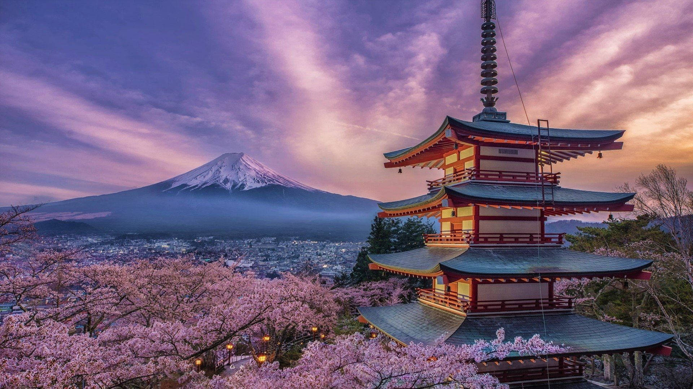
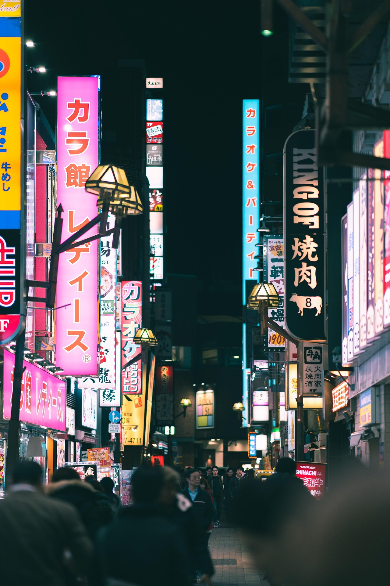

Bem-vindo a Tóquio
Onde a tradição milenar encontra o futuro.
Sobre a cidade
Tóquio é a capital do Japão e uma das maiores metrópoles do mundo. Entre arranha-céus iluminados, templos centenários e jardins tranquilos, é uma cidade onde o antigo e o moderno vivem lado a lado.


